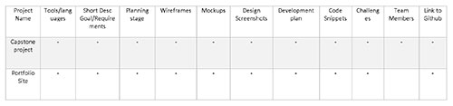
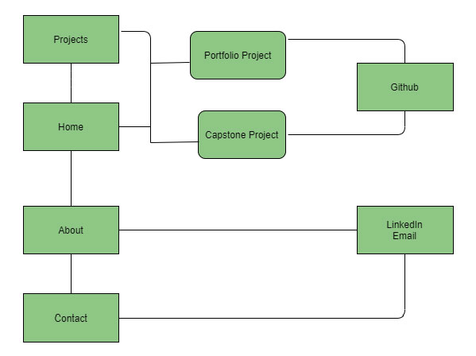
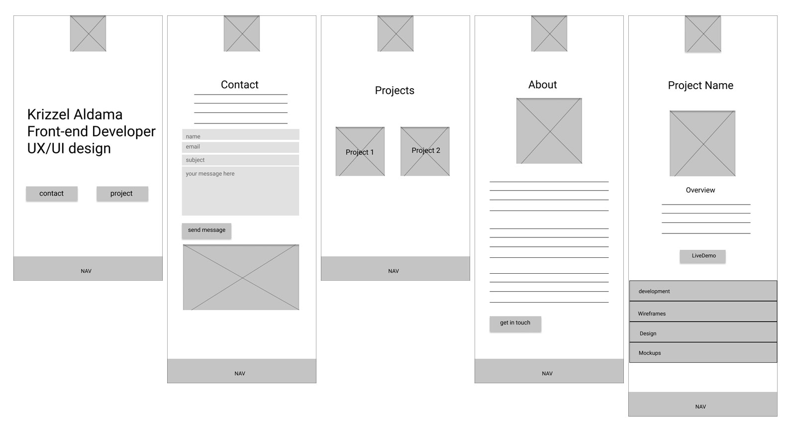
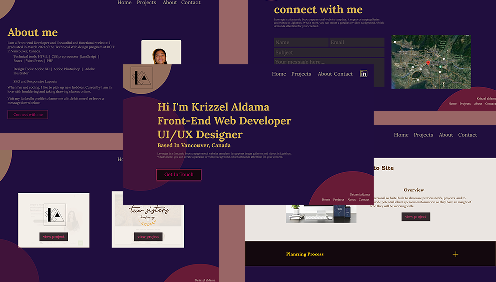

Portfolio Site

A personal website built to showcase previous work, projects and to provide potential clients personal information so they have an insight of who they will be working with.
Information Architecture
The first step I took was to brainstorm the type of content that wil be included on the website.
Site Plan
Built a site plan to make sense of the flow of the website
Wireframes
After the information Architecture and the Site Plan, Wireframes for the mobile version was created to have a rough visuals on how all the content would fit on screen.
Design
The goal of this design was to make it professional with a mix of my persoanlity added on to it. Designing the mockup went through many iterations, ensuring colors are well contrast, font-size big enough for users and that the UI make sense.
Mockup
Code
Writing the code was based on the mockup, adding articles and sections where needed.
Live Site
Once site is live, the website was checked on different browsers, different devices and on the code validator.
Takeaways
Throughout the process, the one thing I would change on my strategy would be to take more time honing in the mockup design, there was a lot of iterations during the coding process that could easile been avoided had I done the mockup until I was 100% satisfied with it, and only then would I start on actually writing the code.